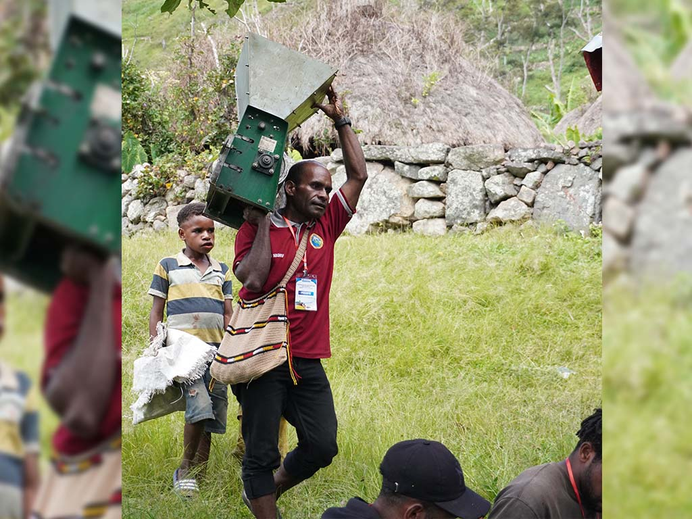
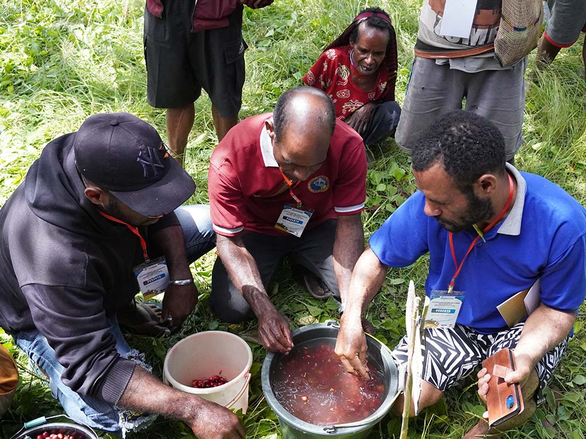
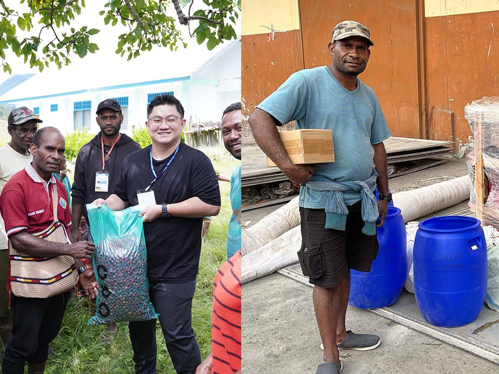

Cafenod

Melayani Lewat Kopi
Eliezer adalah seorang penginjil di sebuah gereja kecil di Hibiem, Distrik Kurima Kabupaten Yahukimo. Dalam pelayanannya, ia menyadari bahwa untuk memajukan manusia atau masyarakat di kampung hibiem, tidak hanya melalui pembangunan batiniah tetapi juga perlu pengembangan sisi lahiriah melalui ekonomi. Salah satu komoditas yang memiliki potensi tersebut adalah kopi. Kopi merupakan potensi besar dari wilayahnya yang perlu dikembangkan. Dalam pengembangan komoditas kopi, Eliezer atau Eli sapaan akrabnya sudah terbiasa melihat orang tua dan keluarganya mengolah, merawat kopi di Kampung Hibiem. Sehingga mengelola kebun kopi bukan hal baru bagi dia, untuk melanjutkan perjuangan dari orang tua dan keluarganya.


Inovasi Kopi Pegunungan
Eliezer mulai menyadari bahwa banyak pemuda di kampungnya meninggalkan kebun kopi dan lebih memilih merantau. Melihat ini, Eliezer merasa terpanggil untuk berbuat sesuatu yang lebih bagi keberlangsungan kebun kopi baik miliknya dan juga keluarganya. Bersama Highland Roastery, Eliezer mulai mencari tahu tentang cara-cara baru dalam mengolah kopi. mengikuti pelatihan yang diadakan dan belajar tentang teknik pascapanen.
Salah satu yang menarik perhatiannya adalah pasca panen dengan proses natural yang bisa mengoptimalkan kompleksitas cita rasa dan aroma kopi hibiem. Eliezer mencoba metode baru tersebut, Ia memisahkan buah kopi yang paling matang, mencuci dengan air bersih dari mata air pegunungan, lalu memfermentasinya selama 144 jam sebelum dikeringkan. Ia yakin kopi Hibiem memiliki potensi yang lebih besar. Dengan sabar dia menjalani proses perbaikan kualitas kopi di kampungnya. Kopi ini terkenal dengan rasa lemon, orange, jeruk bali, markisa, coklat.
Kopi dan Harapan Hibiem
Berkat kerja kerasnya, kopi Hibiem kembali dikenal luas, para penggemar kopi mulai tertarik dengan cita rasa unik kopi tersebut. Eliezer tidak hanya memperkenalkan kopi Hibiem, tetapi juga menginspirasi pemuda-pemuda kampung untuk kembali ke kebun dan bangga menjadi petani kopi. Bagi Eliezer, setiap cangkir kopi yang diseduh adalah kisah tentang kerja keras, tradisi, dan harapan akan masa depan yang lebih cerah untuk Kampung Hibiem.
